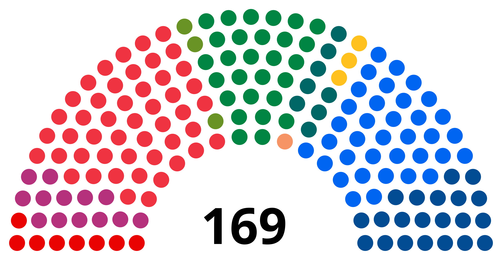

Val i Noreg
I Noreg er det val annakvart år. Kvart fjerde år er det stortingsval, og kvart fjerde år er det kommune- og fylkestingval. I 2021 hadde vi stortingsval, der dei som sit på stortinget no vart valt inn. I 2023 hadde vi kommune- og fylkestingval, der dei som sit i kommunestyra og fylkestinga vart valde inn. I år, 2025, er det igjen klart for stortingsval, der det skal veljast inn representantar til stortinget.
Fleire parti har nokså like meiningar om fleire saker og ønskjer å samarbeide om å danne regjering. Vanlegvis er det den største gruppa parti som vil sitje i regjering ilag som får moglegheita først. I Noreg vert partia vanlegvis inndelt slik: Dei borgarlege partia (Venstre, KrF, Høgre og Frp), og dei raud-grøne partia (Mdg, Senterpartiet, Arbeidarpartiet, SV og Raudt)
Stortinget 2021-2025
På stortinget sit det 169 representantar frå heile landet, altså personar frå ulike politiske parti som har blitt valt av det norske folk til å vedta lover, og styre landet.


Fordeling av plassar på stortinget frå stortingsvalet 2021
Heimesidene til partia:
Vidare arbeid
Vel kva klassenivå du ønskjer, og finn ei læringsløype som verkar interessant!